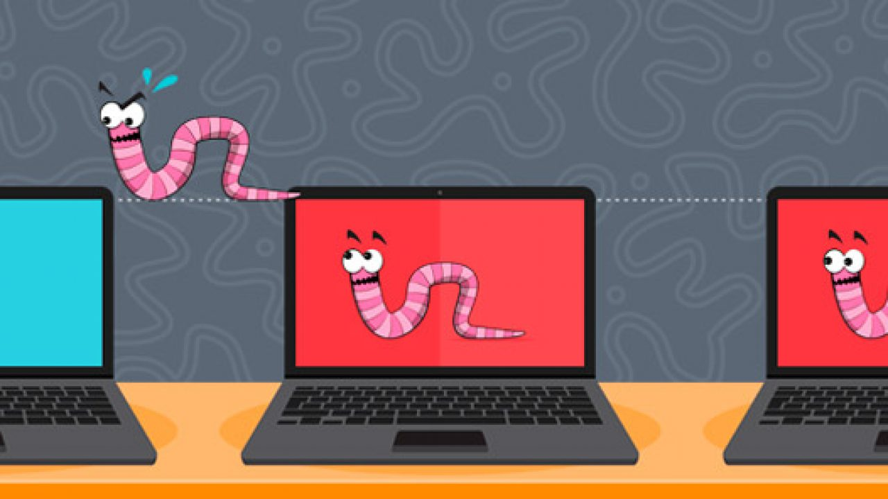

Шпиоснкие программы - общий термин для целого ряда вредоносных программ, которые позволяют следить за действиями пользователя в сети Интернет, а также собирать его конфиденциальные данные
Виды:
Примеры: Fireball, Appearch, Trojan BPlug
Троянские программы - программы, маскирующиеся под легальное программное обеспечение, чтобы обманом заставить пользователей запустить вредоносные программы на компьютере. Троянские программы – это, своего рода, точки входа злоумышленников в систему. В отличие от червей, им для работы необходимо устройство. После установки троянской программы на устройство злоумышленники могут использовать ее для удаления, изменения и сбора данных с устройства в рамках ботнета, а также для слежки за устройством и получения доступа к сети.
Виды:
Примеры: Trojan.Encoder.567, Trojan.Downloader18.52977, Trojan.PWS.Steeller.13025
Вирус - это фрагмент кода, который вставляется в приложение и запускается при его запуске. Попав в сеть, вирус может использоваться для кражи конфиденциальных данных, запуска DDoS-атак или атак программ-вымогателей. Обычно вирус распространяется через зараженные веб-сайты, при совместном доступе к файлам, при загрузке зараженных вложений электронной почты. Вирус бездействует до момента активации зараженного файла или программы. После этого вирус начинает распространяться в системе.
Примеры: Stuxnet, Brain, Mindspark
Черви - это один из наиболее часто встречающихся типов вредоносных программ, распространяющихся по компьютерным сетям, используя уязвимости операционной системы. Черви представляют собой отдельные программы, распространяющиеся путем самокопирования с целью заражения других компьютеров, при этом никаких действий со стороны пользователей или злоумышленников не требуется. Благодаря способности быстро распространяться, черви часто используются для выполнения фрагментов кода, созданного для повреждения системы, например, они могут удалять файлы в системе, шифровать данные для атаки программы-вымогателя, красть информацию и создавать ботнеты.
Примеры: P2P-worm, Email-worm, Virus
Программы-вымогатели - это вредоносные программы, осуществляющие блокировку или отказ доступа пользователей к системе или данным до момента выплаты выкупа. Программы-шифровальщики – это тип программ-вымогателей, выполняющих шифрование пользовательских файлов и требующих оплаты в определенный срок и часто в цифровой валюте, например, в биткойнах. Программы-вымогатели уже много лет представляют угрозу для компаний всех отраслей. По мере того как все больше компаний переходят на цифровые технологии, вероятность стать жертвой атак программ-вымогателей значительно возрастает.
Программы-шифровальщик - программа-вымогатель, которая шифрует данные на устройстве пользователя и требует выкуп за их восстановление
Примеры: Maze1, WannaCry3, Locky4